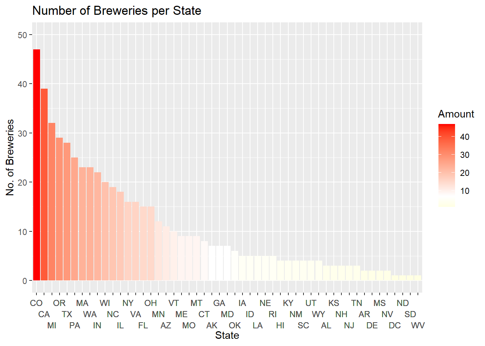
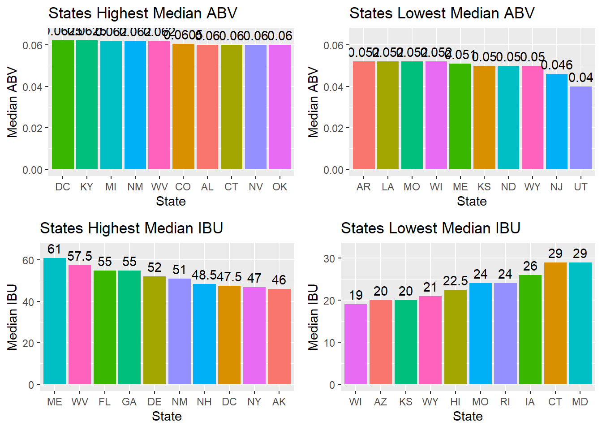
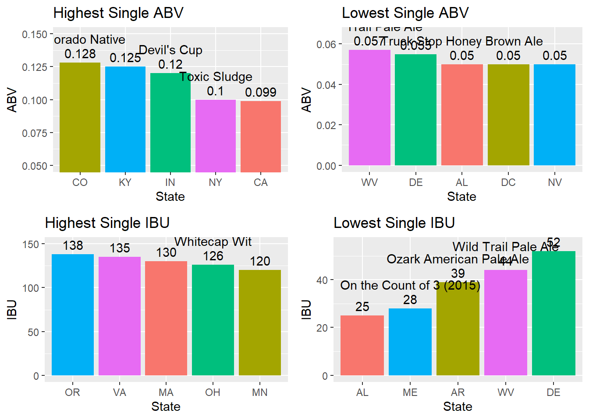
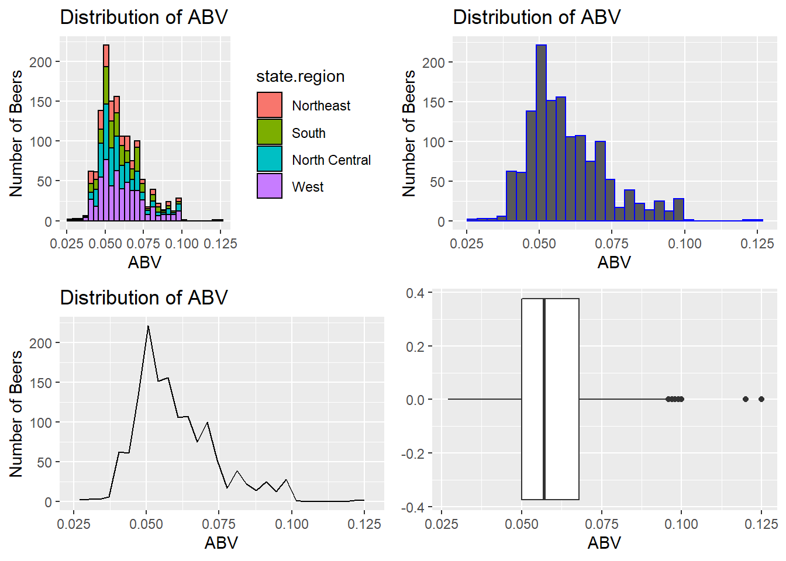
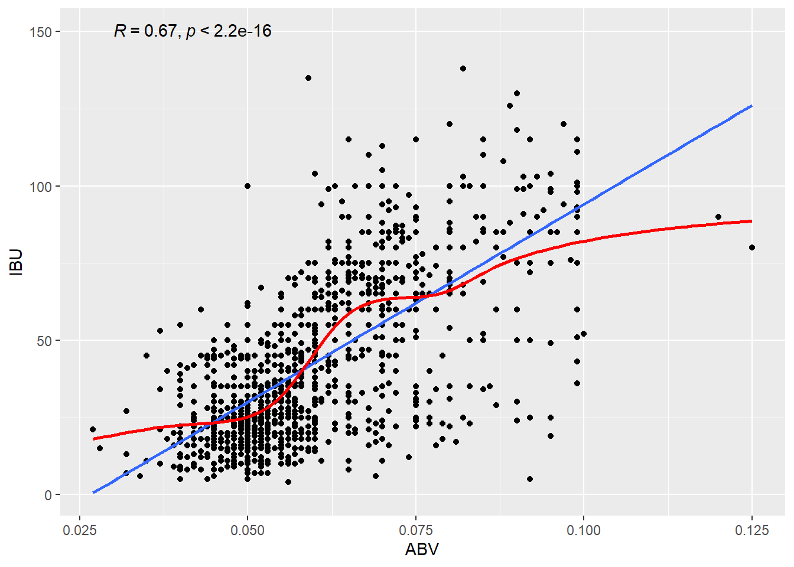
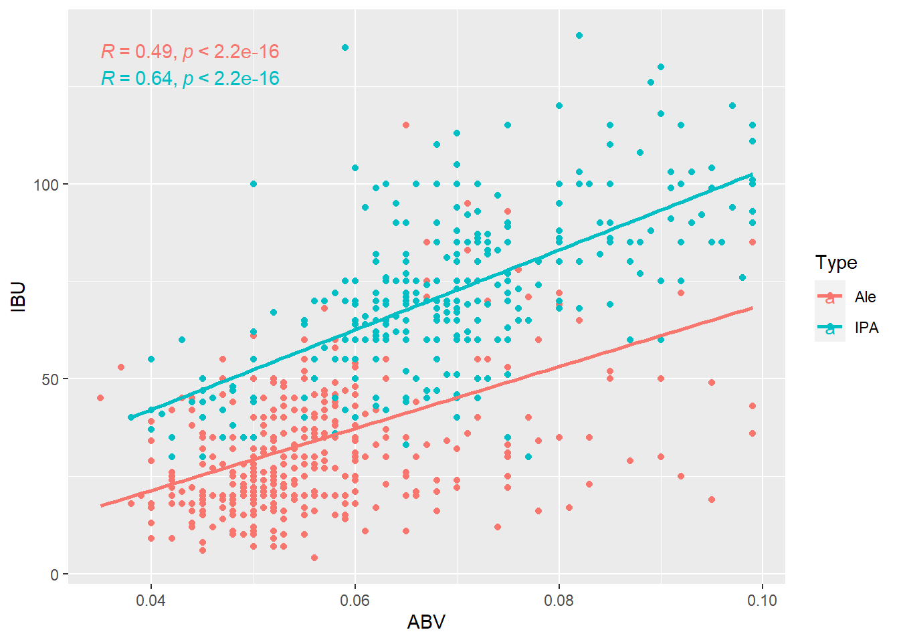
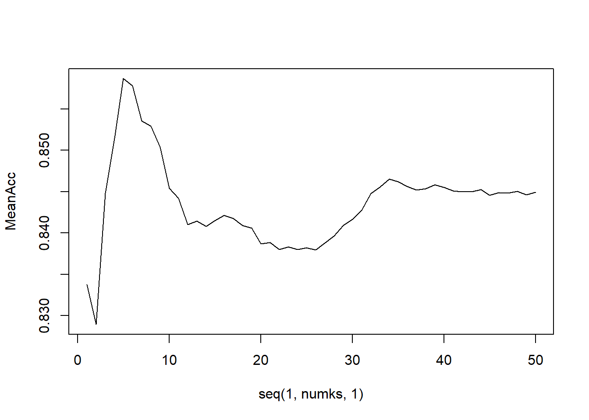
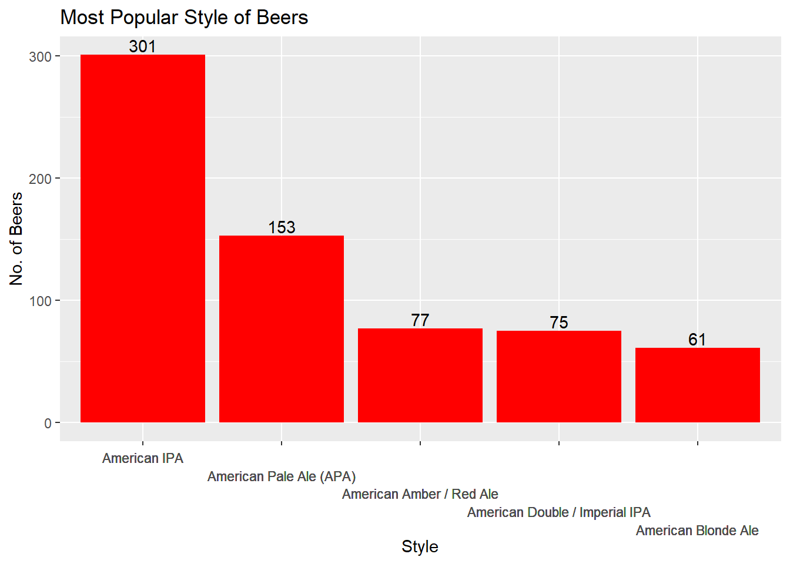
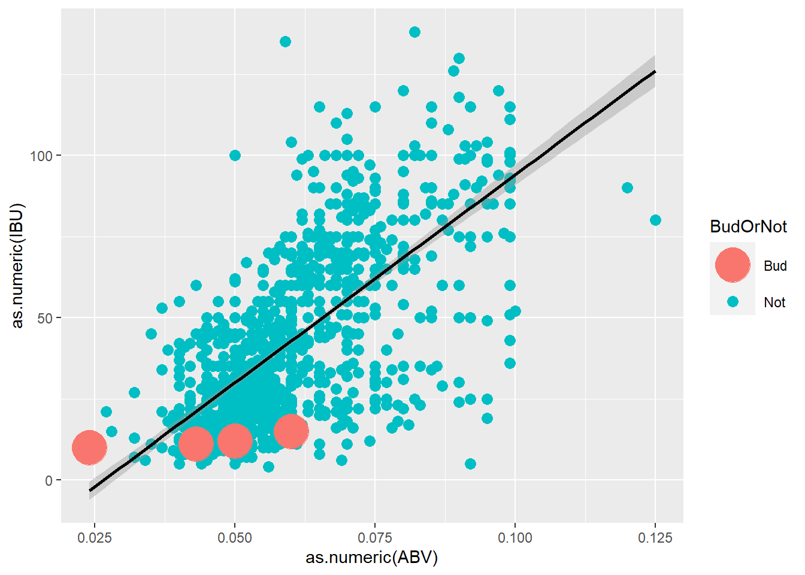
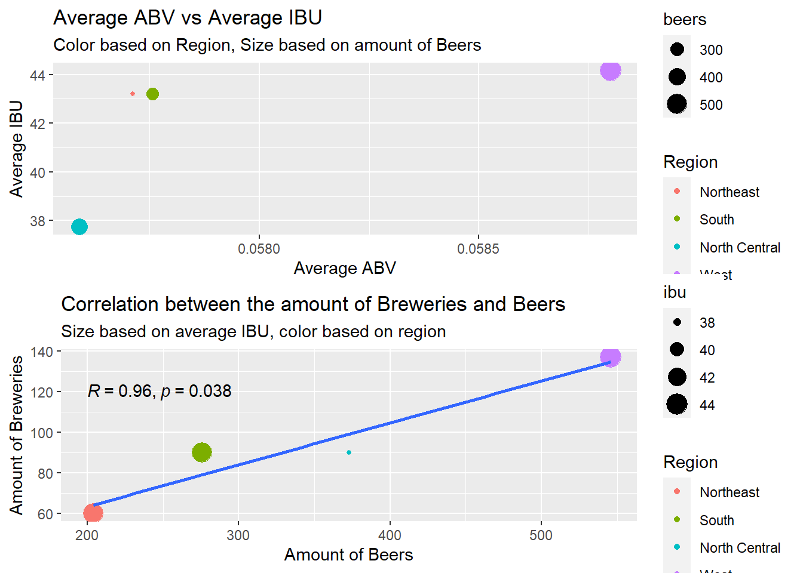

library(tidyverse)
library(dplyr)
library(readr)
library(ggplot2)
library(plotly)
library(GGally)
library(cowplot)
library(ggpubr)
library(devtools)
library(ggcorrplot)
library(ggfittext)
library(class)
library(caret)
library(e1071)
library(usmap)
############################## INTRODUCTION ####################################
#
# This R markdown file will answer the 9 questions "asked" by the"Budweiser CEO
# and CFO using the provided Beer and Breweries data sets. We will first import
# and summarize the data to check for any apparent anomalies before organizing
# with the use of tidyverse. From there we will address each question broken up
# into Parts 1 - 9, each with step by step comments and a final conclusion.
#
############################## INTRODUCTION ####################################
## Read in the .csv's
Beer = read_csv("Beers.csv")## Rows: 2410 Columns: 7## -- Column specification -------------------------------------------------------------------------------------------------
## Delimiter: ","
## chr (2): Name, Style
## dbl (5): Beer_ID, ABV, IBU, Brewery_id, Ounces##
## i Use `spec()` to retrieve the full column specification for this data.
## i Specify the column types or set `show_col_types = FALSE` to quiet this message.Brewery = read_csv("Breweries.csv")## Rows: 558 Columns: 4## -- Column specification -------------------------------------------------------------------------------------------------
## Delimiter: ","
## chr (3): Name, City, State
## dbl (1): Brew_ID##
## i Use `spec()` to retrieve the full column specification for this data.
## i Specify the column types or set `show_col_types = FALSE` to quiet this message.## Of course you'll need to change the above part to match your system
################################### PART 2 #####################################
#
# 2. Merge beer data with the breweries data. Print the first 6 observations and
# the last six observations to check the merged file.
#
################################### PART 2 #####################################
# Renamed the 'name' columns, as they were the same in both .csv files, which
# were hard to distinguish when the tables combined.
colnames(Beer)[1] = "Beer_Name"
colnames(Brewery)[2] = "Brewery_Name"
# Used a full join to make sure all data is accurately represented.
BB = full_join(Beer,Brewery,by = c("Brewery_id" = "Brew_ID"))
# A filtered dataset of BB
BB_F = BB %>% drop_na(IBU,ABV,Style)
# Inspecting the top and bottom of our new dataframe
head(BB,6)## # A tibble: 6 x 10
## Beer_Name Beer_ID ABV IBU Brewery_id Style Ounces Brewery_Name City State
## <chr> <dbl> <dbl> <dbl> <dbl> <chr> <dbl> <chr> <chr> <chr>
## 1 Pub Beer 1436 0.05 NA 409 American Pale Lager 12 10 Barrel Brewing~ Bend OR
## 2 Devil's Cup 2265 0.066 NA 178 American Pale Ale (APA) 12 18th Street Brewe~ Gary IN
## 3 Rise of the Phoenix 2264 0.071 NA 178 American IPA 12 18th Street Brewe~ Gary IN
## 4 Sinister 2263 0.09 NA 178 American Double / Imperial IPA 12 18th Street Brewe~ Gary IN
## 5 Sex and Candy 2262 0.075 NA 178 American IPA 12 18th Street Brewe~ Gary IN
## 6 Black Exodus 2261 0.077 NA 178 Oatmeal Stout 12 18th Street Brewe~ Gary INtail(BB,6)## # A tibble: 6 x 10
## Beer_Name Beer_ID ABV IBU Brewery_id Style Ounces Brewery_Name City State
## <chr> <dbl> <dbl> <dbl> <dbl> <chr> <dbl> <chr> <chr> <chr>
## 1 Rocky Mountain Oyster Stout 1035 0.075 NA 425 American Stout 12 Wynkoop Brewing~ Denv~ CO
## 2 Belgorado 928 0.067 45 425 Belgian IPA 12 Wynkoop Brewing~ Denv~ CO
## 3 Rail Yard Ale 807 0.052 NA 425 American Amber / Red Ale 12 Wynkoop Brewing~ Denv~ CO
## 4 B3K Black Lager 620 0.055 NA 425 Schwarzbier 12 Wynkoop Brewing~ Denv~ CO
## 5 Silverback Pale Ale 145 0.055 40 425 American Pale Ale (APA) 12 Wynkoop Brewing~ Denv~ CO
## 6 Rail Yard Ale (2009) 84 0.052 NA 425 American Amber / Red Ale 12 Wynkoop Brewing~ Denv~ CO############################### PART 2 CONCLUSION ##############################
#
# Upon inspection of the head and tail of the merged data frame,
# everything appears to have joined successfully.
#
############################### PART 2 CONCLUSION ##############################
################################### PART 1 #####################################
#
# 1. How many breweries are present in each state?
#
################################### PART 1 #####################################
# Create set from Brewery data to total the number of Breweries in each state
by_State <- as.data.frame(table(Brewery$State))
# Rename columns to better reflect specific purpose of this data
colnames(by_State) = c("State", "Amount")
# Arrange the set in descending order
by_State <- arrange(by_State, desc(Amount))
# print top 10 states with most breweries
TopTen = head(by_State,10)
TopTen## State Amount
## 1 CO 47
## 2 CA 39
## 3 MI 32
## 4 OR 29
## 5 TX 28
## 6 PA 25
## 7 MA 23
## 8 WA 23
## 9 IN 22
## 10 WI 20# print bottom 10 states with least breweries
LastTen = tail(by_State,10)
LastTen## State Amount
## 42 NJ 3
## 43 TN 3
## 44 AR 2
## 45 DE 2
## 46 MS 2
## 47 NV 2
## 48 DC 1
## 49 ND 1
## 50 SD 1
## 51 WV 1# gradient colored bar plot of same data in descending order
by_State %>%
ggplot(aes(x = reorder(State, -Amount), y = Amount, fill = Amount)) +
geom_bar(stat="identity") +
scale_fill_gradient2(low = "yellow",
high = "red",
midpoint = median(by_State$Amount)) +
labs(title="Number of Breweries per State", x="State", y="No. of Breweries") +
ylim(0, 50)+
scale_x_discrete(limits = by_State$State) +
theme(axis.text.x = element_text(vjust = grid::unit(c(-4, -2, 0), "points")))## Warning: Vectorized input to `element_text()` is not officially supported.
## Results may be unexpected or may change in future versions of ggplot2.
############################### PART 1 CONCLUSION ##############################
#
# The 10 States with the most number of Breweries are: Colorado (47),
# California (39), Michigan (32), Oregon (29), Texas (28), Pennsylvania (25),
# Massachusetts (23), Washington (23), Indiana (22), and Wisconsin (20).
# The 10 States with the least number of Breweries are: West Virginia (1),
# South Dakota (1), North Dakota (1), District of Columbia (1), Nevada (2),
# Mississippi (2), Delaware (2), Arkansas (2), Tennessee (3), and New Jersey (3).
#
############################### PART 1 CONCLUSION ##############################
################################### PART 3 #####################################
#
# 3. Address the missing values in each column.
#
################################### PART 3 #####################################
# Create 2 additional data sets, one with by dropping the ABV N/A values and
# the other dropping the IBU N/A values
BB_ABV = BB %>% drop_na(ABV,Style)
BB_IBU = BB %>% drop_na(IBU,Style)
BB_Both = BB %>% drop_na(IBU,ABV,Style)
# Check summaries of each data set to look for N/A values
summary(Beer)## Beer_Name Beer_ID ABV IBU Brewery_id Style
## Length:2410 Min. : 1.0 Min. :0.00100 Min. : 4.00 Min. : 1.0 Length:2410
## Class :character 1st Qu.: 808.2 1st Qu.:0.05000 1st Qu.: 21.00 1st Qu.: 94.0 Class :character
## Mode :character Median :1453.5 Median :0.05600 Median : 35.00 Median :206.0 Mode :character
## Mean :1431.1 Mean :0.05977 Mean : 42.71 Mean :232.7
## 3rd Qu.:2075.8 3rd Qu.:0.06700 3rd Qu.: 64.00 3rd Qu.:367.0
## Max. :2692.0 Max. :0.12800 Max. :138.00 Max. :558.0
## NA's :62 NA's :1005
## Ounces
## Min. : 8.40
## 1st Qu.:12.00
## Median :12.00
## Mean :13.59
## 3rd Qu.:16.00
## Max. :32.00
## summary(Brewery)## Brew_ID Brewery_Name City State
## Min. : 1.0 Length:558 Length:558 Length:558
## 1st Qu.:140.2 Class :character Class :character Class :character
## Median :279.5 Mode :character Mode :character Mode :character
## Mean :279.5
## 3rd Qu.:418.8
## Max. :558.0summary(BB)## Beer_Name Beer_ID ABV IBU Brewery_id Style
## Length:2410 Min. : 1.0 Min. :0.00100 Min. : 4.00 Min. : 1.0 Length:2410
## Class :character 1st Qu.: 808.2 1st Qu.:0.05000 1st Qu.: 21.00 1st Qu.: 94.0 Class :character
## Mode :character Median :1453.5 Median :0.05600 Median : 35.00 Median :206.0 Mode :character
## Mean :1431.1 Mean :0.05977 Mean : 42.71 Mean :232.7
## 3rd Qu.:2075.8 3rd Qu.:0.06700 3rd Qu.: 64.00 3rd Qu.:367.0
## Max. :2692.0 Max. :0.12800 Max. :138.00 Max. :558.0
## NA's :62 NA's :1005
## Ounces Brewery_Name City State
## Min. : 8.40 Length:2410 Length:2410 Length:2410
## 1st Qu.:12.00 Class :character Class :character Class :character
## Median :12.00 Mode :character Mode :character Mode :character
## Mean :13.59
## 3rd Qu.:16.00
## Max. :32.00
## summary(BB_ABV)## Beer_Name Beer_ID ABV IBU Brewery_id Style
## Length:2346 Min. : 1.0 Min. :0.00100 Min. : 4.00 Min. : 1.0 Length:2346
## Class :character 1st Qu.: 827.2 1st Qu.:0.05000 1st Qu.: 21.00 1st Qu.: 94.0 Class :character
## Mode :character Median :1462.5 Median :0.05600 Median : 35.00 Median :206.0 Mode :character
## Mean :1438.8 Mean :0.05978 Mean : 42.74 Mean :231.4
## 3rd Qu.:2077.8 3rd Qu.:0.06700 3rd Qu.: 64.00 3rd Qu.:366.0
## Max. :2692.0 Max. :0.12800 Max. :138.00 Max. :558.0
## NA's :943
## Ounces Brewery_Name City State
## Min. : 8.40 Length:2346 Length:2346 Length:2346
## 1st Qu.:12.00 Class :character Class :character Class :character
## Median :12.00 Mode :character Mode :character Mode :character
## Mean :13.59
## 3rd Qu.:16.00
## Max. :32.00
## summary(BB_IBU)## Beer_Name Beer_ID ABV IBU Brewery_id Style Ounces
## Length:1403 Min. : 1 Min. :0.02700 Min. : 4.00 Min. : 1.0 Length:1403 Min. : 8.40
## Class :character 1st Qu.: 771 1st Qu.:0.05000 1st Qu.: 21.00 1st Qu.: 96.5 Class :character 1st Qu.:12.00
## Mode :character Median :1435 Median :0.05700 Median : 35.00 Median :199.0 Mode :character Median :12.00
## Mean :1414 Mean :0.05992 Mean : 42.74 Mean :224.4 Mean :13.51
## 3rd Qu.:2068 3rd Qu.:0.06800 3rd Qu.: 64.00 3rd Qu.:351.0 3rd Qu.:16.00
## Max. :2692 Max. :0.12500 Max. :138.00 Max. :547.0 Max. :32.00
## Brewery_Name City State
## Length:1403 Length:1403 Length:1403
## Class :character Class :character Class :character
## Mode :character Mode :character Mode :character
##
##
## # Count the number of rows with ABV N/A values
sum(is.na(BB$ABV))## [1] 62# Count the number of rows with ABV N/A values after N/A are dropped
sum(is.na(BB_ABV$ABV))## [1] 0# Count the number of rows with ABV N/A values
sum(is.na(BB$IBU))## [1] 1005# Count the number of rows with ABV N/A values after N/A are dropped
sum(is.na(BB_IBU$IBU))## [1] 0############################### PART 3 CONCLUSION ##############################
#
# We created 3 new data sets all with specific further analysis in mind
# There are a small number of beer entries which do no have a "Style" associated
# with them. As much of our analysis will be utilizing the "Style" to better
# group the beers, we will exclude these N/A values in all 3 new data sets.
# When exploring the ABV relationship and distribution, we will use the BB_ABV
# set which excludes all N/A ABV entries. Alcohol by Volume is required to be on
# all beers in the United States be law. The fact some of the entries are missing
# these values leads us to question the accuracy of those entries.
# When exploring the IBU relationship and distribution, we will use the BB_IBU
# set which excludes all N/A ABV entries. IBU is not required by law but rather an
# informative metric of bitterness for the consumer. Unless specifically digging
# into the IBU values, we are comfortable using entries that do not have an IBU
# listed. When exploring the relationship BETWEEN ABV and IBU, we will use the
# BB_Both set which excludes all entries that have N/A for ABV OR IBU OR both.
#
############################### PART 3 CONCLUSION ##############################
################################### PART 4 #####################################
#
# 4. Compute the median alcohol content and international bitterness unit for
# each state. Plot a bar chart to compare.
#
################################### PART 4 #####################################
# Here we take the filtered data sets previously created, group the data by each
# state, then take the necessary summary.
# The data is then organized, so that the highest/lowest value is at the top
# and we can slice the data frame to show exactly what we want. Then
# we use standard ggplot functions, where we also reorder the bars for
# readability.
## Highest median ABV by state using the data set which excludes N/A ABV values.
g1 = BB_ABV %>% group_by(State) %>% summarise(Median_ABV = median(ABV)) %>%
arrange(desc(Median_ABV)) %>% slice(1:10) %>%
ggplot(aes(reorder(State,-Median_ABV), y = Median_ABV, fill = State)) +
geom_bar(stat = "identity") +
labs(title="States Highest Median ABV", x="State", y="Median ABV") +
geom_text(aes(label = round(Median_ABV,digits = 4)), vjust = -.5) +
theme(legend.position="none") + ylim(0,.065)
## Lowest median ABV by state using the data set which excludes N/A ABV values.
g2 = BB_ABV %>% group_by(State) %>% summarise(Median_ABV = median(ABV)) %>%
arrange((Median_ABV)) %>% slice(1:10) %>%
ggplot(aes(reorder(State,-Median_ABV), y = Median_ABV, fill = State)) +
geom_bar(stat = "identity") +
labs(title="States Lowest Median ABV", x="State", y="Median ABV") +
geom_text(aes(label = round(Median_ABV,digits = 4)), vjust = -.5) +
theme(legend.position="none")+ ylim(0,.065)
## Highest median IBU by state using the data set which excludes N/A ABV values.
g3 = BB_IBU %>% group_by(State) %>% summarise(Median_IBU = median(IBU)) %>%
arrange(desc(Median_IBU)) %>% slice(1:10) %>%
ggplot(aes(reorder(State,-Median_IBU), y = Median_IBU, fill = State)) +
geom_bar(stat = "identity") +
labs(title="States Highest Median IBU", x="State", y="Median IBU") +
geom_text(aes(label = round(Median_IBU,digits = 4)), vjust = -.5) +
theme(legend.position="none") + ylim(0,65)
## Lowest median IBU by state using the data set which excludes N/A ABV values.
g4 = BB_IBU %>% group_by(State) %>% summarise(Median_IBU = median(IBU)) %>%
arrange((Median_IBU)) %>% slice(1:10) %>%
ggplot(aes(reorder(State,Median_IBU), y = Median_IBU, fill = State)) +
geom_bar(stat = "identity") +
labs(title="States Lowest Median IBU", x="State", y="Median IBU") +
geom_text(aes(label = round(Median_IBU,digits = 4)), vjust = -.5) +
theme(legend.position="none") + ylim(0,32)
## Show the plots on one page
ggarrange(g1,g2,g3,g4, ncol = 2, nrow = 2)
############################### PART 4 CONCLUSION ##############################
#
# The 10 States with the highest median ABV are: DC (6.3%), KY (6.3%), MI (6.2%),
# NM (6.2%), WV (6.2%), CO (6.1%), AL (6.0%), CT (6.0%), NV (6.0%), and OK (6.0%).
# The 10 States with the lowest median ABV are: UT (4.0%), NJ (4.6%), WY (5.0%),
# ND (5.0%), KS (5.0%), ME (5.1%), WI (5.2%), MO (5.2%), LA (5.2%), and AR (5.2%).
# The 10 States with the highest median IBU are: ME (61), WV (56), FL (55),
# GA (55), DE (52), NM (51), NH (49), DC (48), NY (47), and AK (46).
# The 10 States with the lowest median IBU are: WI (19), KS (20), AZ (21),
# WY (21), HI (23), MO (24), RI (24), IA (26), CT (29), and MD (29).
#
############################### PART 4 CONCLUSION ##############################
################################### PART 5 #####################################
#
# 5. Which state has the maximum alcoholic (ABV) beer? Which state has the most
# bitter (IBU) beer?
#
################################### PART 5 #####################################
# Using the BB_ABV data set we search for the lowest ABV value recorded and
# check it's brewery/state
MinABV = which.min(BB_ABV$ABV)
BB_ABV[MinABV,]## # A tibble: 1 x 10
## Beer_Name Beer_ID ABV IBU Brewery_id Style Ounces Brewery_Name City State
## <chr> <dbl> <dbl> <dbl> <dbl> <chr> <dbl> <chr> <chr> <chr>
## 1 Scotty K NA 606 0.001 NA 523 Low Alcohol Beer 16 Uncommon Brewers Santa Cruz CA# Using the BB_ABV data set we search for the highest ABV value recorded and
# check it's brewery/state
MaxABV = which.max(BB_ABV$ABV)
BB_ABV[MaxABV,]## # A tibble: 1 x 10
## Beer_Name Beer_ID ABV IBU Brewery_id Style Ounces Brewery_Name City State
## <chr> <dbl> <dbl> <dbl> <dbl> <chr> <dbl> <chr> <chr> <chr>
## 1 Lee Hill Series Vol. 5 - Belgian St~ 2565 0.128 NA 52 Quadrupel (~ 19.2 Upslope Brewing C~ Bould~ CO# Using the BB_ABV data set we search for the lowest IBU value recorded and
# check it's brewery/state
MinIBU = which.min(BB_IBU$IBU)
BB_IBU[MinIBU,]## # A tibble: 1 x 10
## Beer_Name Beer_ID ABV IBU Brewery_id Style Ounces Brewery_Name City State
## <chr> <dbl> <dbl> <dbl> <dbl> <chr> <dbl> <chr> <chr> <chr>
## 1 Summer Solstice 1350 0.056 4 172 Cream Ale 12 Anderson Valley Brewing Company Boonville CA# Using the original/unfiltered data set we search for the highest ABV value
# recorded and check it's brewery/state
MaxIBU = which.max(BB_IBU$IBU)
BB_IBU## # A tibble: 1,403 x 10
## Beer_Name Beer_ID ABV IBU Brewery_id Style Ounces Brewery_Name City State
## <chr> <dbl> <dbl> <dbl> <dbl> <chr> <dbl> <chr> <chr> <chr>
## 1 Bitter Bitch 1979 0.061 60 178 America~ 12 18th Street B~ Gary IN
## 2 Lower De Boom 1036 0.099 92 369 America~ 8.4 21st Amendmen~ San F~ CA
## 3 Fireside Chat 1024 0.079 45 369 Winter ~ 12 21st Amendmen~ San F~ CA
## 4 Bitter American 876 0.044 42 369 America~ 12 21st Amendmen~ San F~ CA
## 5 Hell or High Watermelon Wheat (2009) 802 0.049 17 369 Fruit /~ 12 21st Amendmen~ San F~ CA
## 6 Hell or High Watermelon Wheat (2009) 801 0.049 17 369 Fruit /~ 12 21st Amendmen~ San F~ CA
## 7 21st Amendment Watermelon Wheat Beer (2006) 800 0.049 17 369 Fruit /~ 12 21st Amendmen~ San F~ CA
## 8 21st Amendment IPA (2006) 799 0.07 70 369 America~ 12 21st Amendmen~ San F~ CA
## 9 Brew Free! or Die IPA (2008) 797 0.07 70 369 America~ 12 21st Amendmen~ San F~ CA
## 10 Brew Free! or Die IPA (2009) 796 0.07 70 369 America~ 12 21st Amendmen~ San F~ CA
## # ... with 1,393 more rows# Plot the top 5 states with the highest ABV (1 per state)
g5 = BB_ABV %>% group_by(State) %>%
summarise(Max_ABV = max(ABV),Beer_Name = Beer_Name[1]) %>%
arrange(desc(Max_ABV)) %>%
slice(1:5) %>%
ggplot(aes(reorder(State,-Max_ABV), y = Max_ABV, fill = State)) +
geom_bar(stat = "identity") +
labs(title="Highest Single ABV", x="State", y="ABV") +
geom_text(aes(label = round(Max_ABV,digits = 5)), vjust = -.5) +
geom_text(aes(label = Beer_Name, vjust = -2), check_overlap = T) +
theme(legend.position="none") +
coord_cartesian(ylim = c(.05,.15))
# Plot the bottom 5 states with the lowest ABV (1 per state)
g6 = BB_ABV %>% group_by(State) %>%
summarise(min_ABV = min(ABV),Beer_Name = Beer_Name[1]) %>%
arrange(desc(min_ABV)) %>%
slice(1:5) %>%
ggplot(aes(reorder(State,-min_ABV), y = min_ABV, fill = State)) +
geom_bar(stat = "identity") +
labs(title="Lowest Single ABV", x="State", y="ABV") +
geom_text(aes(label = round(min_ABV,digits = 5)), vjust = -.5) +
geom_text(aes(label = Beer_Name, vjust = -2), check_overlap = T) +
theme(legend.position="none") +
coord_cartesian(ylim = c(.0,.065))
# Plot the bottom 5 states with the highest IBU (1 per state)
g7 = BB_IBU %>% group_by(State) %>%
summarise(Max_IBU = max(IBU),Beer_Name = Beer_Name[1]) %>%
arrange(desc(Max_IBU)) %>%
slice(1:5) %>%
ggplot(aes(reorder(State,-Max_IBU), y = Max_IBU, fill = State)) +
geom_bar(stat = "identity") +
labs(title="Highest Single IBU", x="State", y="IBU") +
geom_text(aes(label = round(Max_IBU,digits = 5)), vjust = -.5) +
geom_text(aes(label = Beer_Name, vjust = -2), check_overlap = T) +
theme(legend.position="none") +
coord_cartesian(ylim = c(0,150))
# Plot the bottom 5 states with the lowest IBU (1 per state)
g8 = BB_IBU %>% group_by(State) %>%
summarise(min_IBU = min(IBU),Beer_Name = Beer_Name[1]) %>%
arrange(desc(min_IBU)) %>%
slice(1:5) %>%
ggplot(aes(reorder(State,min_IBU), y = min_IBU, fill = State)) +
geom_bar(stat = "identity") +
labs(title="Lowest Single IBU", x="State", y="IBU") +
geom_text(aes(label = round(min_IBU,digits = 5)), vjust = -.5) +
geom_text(aes(label = Beer_Name, vjust = -2), check_overlap = T) +
theme(legend.position="none") +
coord_cartesian(ylim = c(0,55))
## Show the plots on one page
ggarrange(g5,g6,g7,g8, ncol = 2, nrow = 2)
############################### PART 5 CONCLUSION ##############################
#
# The highest ABV beer comes in at 12.8% Alcohol by Volume. The beer is called
# "Lee Hill Series Vol. 5 - Belgian Style Quadrupel Ale" and is brewed at Upslope
# Brewing Company in Boulder Colorado.
# The highest IBU beer comes in at a bitterness of 138. The beer is called
# "Bitter Bitch Imperial IPA" and is brewed at Astoria Brewing Company
# in Astoria, Oregon.
#
############################### PART 5 CONCLUSION ##############################
################################### PART 6 #####################################
#
# 6. Comment on the summary statistics and distribution of the ABV variable.
#
################################### PART 6 #####################################
# Using the integrated region database in R, we created a dataframe where we took
# the abbreviated state name and it's corresponding region, then using a left
# join we were able to associate a region with it's corresponding state.
State_Region = data.frame(state.abb, state.region)
BB_F_Region = left_join(BB_F,State_Region, by = c("State" = "state.abb"))
# sum(is.na(BB_F_Region$state.region))
# [1] 0
# Filling in the bars with the corresponding region vs the corresponsing state,
# allows for more inferences to be made, and is much easier to read.
g9 = BB_F_Region %>% drop_na() %>% ggplot(aes(x = ABV, fill = state.region)) +
geom_histogram(color = 'black') +
labs(title="Distribution of ABV", x="ABV", y="Number of Beers")
g10 = BB_F_Region %>% ggplot(aes(x = ABV)) + geom_histogram(color = 'blue') +
labs(title="Distribution of ABV", x="ABV", y="Number of Beers")
g11 = BB_F_Region %>% ggplot(aes(x = ABV)) + geom_line(aes(fill=..count..),stat="bin") +
labs(title="Distribution of ABV", x="ABV", y="Number of Beers")## Warning: Ignoring unknown aesthetics: fillg12 = BB_F_Region %>% ggplot(aes(x = ABV)) + geom_boxplot()
summary(BB_F$ABV)## Min. 1st Qu. Median Mean 3rd Qu. Max.
## 0.02700 0.05000 0.05700 0.05992 0.06800 0.12500## Show the plots on one page
ggarrange(g9,g10,g11,g12, ncol = 2, nrow = 2)## `stat_bin()` using `bins = 30`. Pick better value with `binwidth`.## `stat_bin()` using `bins = 30`. Pick better value with `binwidth`.
## `stat_bin()` using `bins = 30`. Pick better value with `binwidth`.
############################### PART 6 CONCLUSION ##############################
#
# Plotting the ABV distribution for all beers which have a valid ABV entry,
# we get a right-tailed distribution centered around a mean of ABV = 5.97%.
# The middle 50% of the distribution (Q25% to Q75%) has an ABV range of only 1.7%.
# The median of the distribution is 5.6%, slightly lower than the mean and more
# indicative of the plot's main high point.
#
############################### PART 6 CONCLUSION ##############################
################################### PART 7 #####################################
#
# 7. Is there an apparent relationship between the bitterness of the beer and
# its alcoholic content? Draw a scatter plot. Make your best judgment of a
# relationship and EXPLAIN your answer.
#
################################### PART 7 #####################################
ABVvsIBU = BB_Both %>% select(ABV,IBU)
corr = round(cor(ABVvsIBU),2)
head(corr)## ABV IBU
## ABV 1.00 0.67
## IBU 0.67 1.00ggplot(ABVvsIBU, aes(x = ABV, y = IBU)) + geom_point() +
stat_cor(label.x = .03, label.y = 150) +
geom_smooth(method = lm, se=FALSE) + geom_smooth(se = FALSE, color = "red") ## `geom_smooth()` using formula 'y ~ x'## `geom_smooth()` using method = 'gam' and formula 'y ~ s(x, bs = "cs")'
############################### PART 7 CONCLUSION ##############################
#
# There is evidence to support a 67% positive correlation between the ABV and
# IBU of a beer. Both a straight line and fitted line illustrate this
# relationship when applied to the scatter plot of data points.
#
############################### PART 7 CONCLUSION ##############################
################################### PART 8 #####################################
#
# 8. Budweiser would also like to investigate the difference with respect to IBU
# and ABV between IPAs (India Pale Ales) and other types of Ale (any beer with
# "Ale" in its name other than IPA). You decide to use KNN classification to
# investigate this relationship. Provide statistical evidence one way or the
# other. You can of course assume your audience is comfortable with percentages.
# KNN is very easy to understand conceptually.
#
# In addition, while you have decided to use KNN to investigate this
# relationship (KNN is required) you may also feel free to supplement your
# response to this question with any other methods or techniques you have
# learned. Creativity and alternative solutions are always encouraged.
#
################################### PART 8 #####################################
# Starting with the filtered data set which removed N/A's for both ABV and IBU,
# we create 3 data sets.
# BB_Ale contains all the beers that contain the word "Ale" in its "Style"
# description and sets it's type as "Ale"
BB_Ale = BB_Both[str_detect(BB_Both$Style, "Ale"), ] %>% add_column(Type = "Ale")
# BB_IPA contains all the beers that contain the word "IPA" in its "Style"
# description and sets it's type as "IPA"
BB_IPA = BB_Both[str_detect(BB_Both$Style, "IPA"), ] %>% add_column(Type = "IPA")
# BB_Type combines the 2 previous data sets to include all beers that have a
# Type of "Ale" or "IPA"
BB_Type <- rbind(BB_Ale, BB_IPA)
# Plot the new data set in a scatterplot to visualize and color code by Type
ggplot(BB_Type, aes(x = ABV, y = IBU, color = Type)) + geom_point() +
stat_cor() + geom_smooth(method = lm, se=FALSE)## `geom_smooth()` using formula 'y ~ x'
# Create a double fo loop that splits the new BB_Type data set into a test and
# train set, then runs 100 iterations using k values between 1 and 50 to find
# the best fit k-value
iterations = 100
numks = 50
splitPerc = .8
masterAcc = matrix(nrow = iterations, ncol = numks)
for(j in 1:iterations)
{
trainIndices = sample(1:dim(BB_Type)[1],round(splitPerc * dim(BB_Type)[1]))
BB_Type_train = BB_Type[trainIndices,]
BB_Type_test = BB_Type[-trainIndices,]
for(i in 1:numks)
{
classifications = knn(BB_Type_train[,c(3,4)],BB_Type_test[,c(3,4)],
BB_Type_train$Type, prob = TRUE, k = i)
table(classifications,BB_Type_test$Type)
CM = confusionMatrix(table(classifications,BB_Type_test$Type))
masterAcc[j,i] = CM$overall[1]
}
}
MeanAcc = colMeans(masterAcc)
plot(seq(1,numks,1),MeanAcc, type = "l")
# Output the best k-value from the loop
which.max(MeanAcc)## [1] 5# Output the Accuracy of the knn classification using the best k-value
max(MeanAcc)## [1] 0.8586842# create a final confusion matrix using the best k-value
classifications = knn(BB_Type_train[,c(3,4)],BB_Type_test[,c(3,4)],
BB_Type_train$Type, prob = TRUE, k = which.max(MeanAcc))
confusionMatrix(table(classifications,BB_Type_test$Type))## Confusion Matrix and Statistics
##
##
## classifications Ale IPA
## Ale 102 11
## IPA 13 64
##
## Accuracy : 0.8737
## 95% CI : (0.8179, 0.9174)
## No Information Rate : 0.6053
## P-Value [Acc > NIR] : 2.88e-16
##
## Kappa : 0.7369
##
## Mcnemar's Test P-Value : 0.8383
##
## Sensitivity : 0.8870
## Specificity : 0.8533
## Pos Pred Value : 0.9027
## Neg Pred Value : 0.8312
## Prevalence : 0.6053
## Detection Rate : 0.5368
## Detection Prevalence : 0.5947
## Balanced Accuracy : 0.8701
##
## 'Positive' Class : Ale
## ############################### PART 8 CONCLUSION ##############################
#
# Using a KNN Classifier that runs through 100 different training/test sets
# for 50 k-values, we concluded an ideal k-value is between 4-6. In this
# particular instance of the classifier using a k-value of 5 yields an
# accuracy of about 85%. Therefore we can confidently predict whether a beer
# is an IPA or an Ale if given the ABV and IBU values.
#
############################### PART 8 CONCLUSION ##############################
################################### PART 9 #####################################
#
# 9. Knock their socks off! Find one other useful inference from the data that
# you feel Budweiser may be able to find value in. You must convince them why it
# is important and back up your conviction with appropriate statistical evidence.
#
################################### PART 9 #####################################
################################### ANDREW #####################################
# Create a data frame from the original Beer data set with only the
# "Name", "Style", "ABV", and "IBU" columns
Not_Bud_Beer <- BB_Both %>%
select(-Beer_ID, -Brewery_id, -Ounces, -Brewery_Name, -City, -State)
Not_Bud_Beer$BudOrNot = "Not"
# Create new data set with Budweiser's product line of Beers
Bud_Beer <- data.frame(Beer_Name = c("Budweiser", "Budweiser Select",
"Budweiser Select 55",
"Budweiser Black Crown"),
ABV = c("0.050", "0.043", "0.024", "0.060"),
IBU = c("12", "11", "10", "15"),
Style = c("American Pale Lager", "Light Lager",
"Light Lager", "American Amber / Red Lager"),
BudOrNot = c("Bud","Bud","Bud","Bud"))
# Create a data frame from the original Brewery data set with only the "City",
# and "Sate", columns
Not_Bud_Brewery <- Brewery %>% select(-Brew_ID, -Brewery_Name)
# Create new data set with Budweiser's product line of Beers
Bud_Brewery <- data.frame (City = c("Cartersville", "Columbus", "Los Angeles",
"Fairfield", "Fairfield", "Houston",
"Jacksonville", "St. Louis"),
State = c("NY", "GA", "OH", "CA", "CA", "TX", "FL",
"MO"))
# combine the original Beer and Brewery data sets with the the Budweiser sets
BB_Bud_Beer = rbind(Not_Bud_Beer, Bud_Beer)
BB_Bud_Brewery <- rbind(Not_Bud_Brewery, Bud_Brewery)
# Using the original data set, summarize what is the most "popular" style of beer
# Create a data table which totals the amount of beers in each style group
Style_Count <- as.data.frame(table(Not_Bud_Beer$Style))
# arrange the Styles from most to least
Style_Count <- arrange(Style_Count, desc(Freq))
# pick out the top 5 most popular styles
TopFiveStyle = head(Style_Count,5)
# Plot a bar chart of the top 5
TopFiveStyle %>% ggplot(aes(x = reorder(Var1, -Freq), y = Freq)) +
geom_bar(stat = "identity", fill="red") +
labs(title="Most Popular Style of Beers", x="Style", y="No. of Beers") +
geom_text(aes(label=Freq), position=position_dodge(width=0.9), vjust=-0.25) +
theme(axis.text.x = element_text(vjust = grid::unit(c(-8, -6, -4, -2, 0), "points")))## Warning: Vectorized input to `element_text()` is not officially supported.
## Results may be unexpected or may change in future versions of ggplot2.
# Plot the ABV and IBU of all beers to see where Budweiser's products show up
# and where there is potential opportunity to capture more of the market
Bud_ABVvsIBU <- BB_Bud_Beer %>% select(ABV, IBU, BudOrNot)
ggplot(Bud_ABVvsIBU, aes(x = as.numeric(ABV), y = as.numeric(IBU))) +
geom_point(aes(size = BudOrNot, color=BudOrNot)) +
scale_size_manual(values=c(10, 3)) +
geom_smooth(method = lm, se=TRUE, color = "black")## `geom_smooth()` using formula 'y ~ x'
############################# ANDREW CONCLUSION ################################
#
# The executives at Budweiser will likely want to know how their own product
# line of beers and breweries matches up to the rest of the data.
# By adding Budweiser's 4 beers and 8 breweries, we can start to offer some
# insight into potential business areas of opportunity for the company.
#
# If Budweiser was to create a new beer for production, we advise it be:
# An "American IPA" style beer with roughly 6.8% ABV and 50 IBU.
#
# If Budweiser was to open a new brewery for production, we advise it be:
# Located in the state of Colorado.
#
############################# ANDREW CONCLUSION ################################
################################### RAAG #######################################
# I'd like to show how many types of beer's each state produces in relation to
# how many breweries each state has. I counted the amount of Breweries and Beers
# in each state, then counted the average ABV and average IBU, and their relative
# region.
BB_BeerVSBrewery = BB_F_Region %>%
select(State, state.region, Brewery_id, Beer_ID, ABV, IBU) %>%
group_by(State) %>%
summarise(Amt_Brewery = n_distinct(Brewery_id), Amt_Beer = n_distinct(Beer_ID),
Avg_ABV = round(mean(ABV),4), Avg_IBU = round(mean(IBU),2),
Region = state.region[1])
# This graph shows the average ABV and IBU per region, where the size is the
# amount of beers each region makes.
g13 = BB_BeerVSBrewery %>% drop_na() %>% group_by(Region) %>%
summarise(abv = mean(Avg_ABV), ibu = mean(Avg_IBU), beers = sum(Amt_Beer)) %>%
ggplot(aes(x = abv, y = ibu, color = Region)) + geom_point(aes(size = beers)) +
labs(x = "Average ABV", y = "Average IBU", title = "Average ABV vs Average IBU",
subtitle = "Color based on Region, Size based on amount of Beers")
# This graph shows the amount of different types of Beers and the amount of
# breweries per state. It is then colored by region, and the size is based off
# of average IBU in each region.
g14 = BB_BeerVSBrewery %>% drop_na() %>% group_by(Region) %>%
summarise(beers = sum(Amt_Beer), brews = sum(Amt_Brewery), ibu = mean(Avg_IBU),
abv = mean(Avg_ABV)) %>%
ggplot(aes(x = beers, y = brews)) + geom_point(aes(size = ibu,
color = Region)) +
stat_cor(label.x = 200, label.y = 120) + geom_smooth(method = lm, se=FALSE) +
labs(x = "Amount of Beers", y = "Amount of Breweries",
title = "Correlation between the amount of Breweries and Beers",
subtitle = "Size based on average IBU, color based on region")
ggarrange(g13,g14, ncol = 1, nrow = 2)## `geom_smooth()` using formula 'y ~ x'
################################ RAAG CONCLUSION ###############################
#
# There is an incredibly strong relationship between the amount of breweries and
# the amount of beers each state makes. It is also interesting to see that there
# are significantly more breweries and beers made in the west, compared the
# northeast. It is also interesting, per region, that the North Central region
#
#
################################ RAAG CONCLUSION ###############################
################################## CONCLUSION ##################################
#
# In conclusion, given a data sets consisting of 2410 Beers and 558 Breweries,
# we were able to tidy the data, remove unwanted/missing values, calculate a
# variety of summary statistics, compare trends by state, evaluate the
# relationship between ABV and IBU, and finally perform additional assessments
# that the executives at Budweiser may find helpful. Overall, the world of beer
# and breweries covers a vast range of styles and regions. Budweiser is
# positioned well within the "mainstream" which bodes well for their business
# strategy as the largest mass produced beer company in America. If they were
# expand their brand, we recommend producing an American IPA with an ABV of
# around 6.8% to capture a growing consumer interest as well as locating a new
# brewery in the state of Colorado where the opportunities are most plentiful.
#
################################## CONCLUSION ##################################